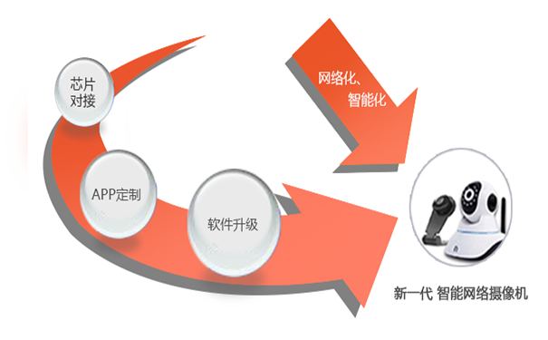
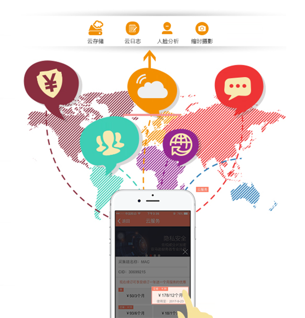
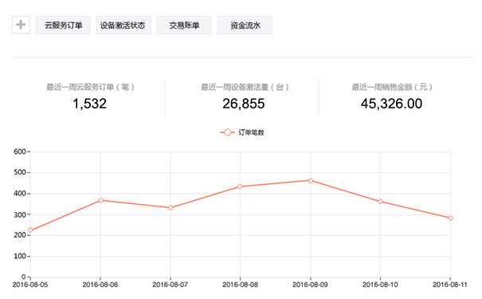
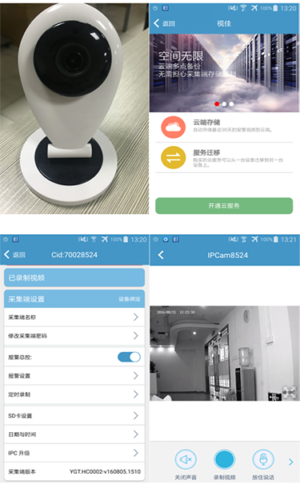
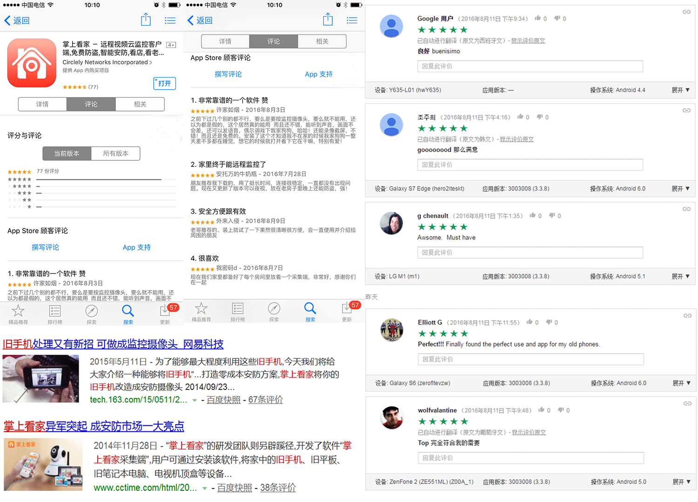

传统IPC硬件厂商期望尽快走出恶性价格战，提供更完善的后续软件服务，增加用户粘度和品牌价值，实现产业的互联网转型。他们的强项在于硬件的生产，软件服务是其薄弱所在，众云视频的出现正是完美解决了传统IPC硬件厂商的烦恼。众云视频开放平台属于南京云恩通讯科技有限公司旗下，提供从音视频编码传输到存储分析的一站式解决方案。经过多年的技术沉淀和经验积累，众云视频将整合公司的力量为传统IPC硬件厂商开发了一套完整可靠的技术解决方案。
产品上，众云视频能够为传统IPC厂商提供芯片对接、APP定制和软件升级等服务，使其真正能实现产品的网络化和智能化并快速量产。
（众云视频产品模块技术方案示意图）
在此基础上，众云视频能够在用户系统、支付系统、云端服务、消息系统、服务器运维等方面帮助传统IPC厂商全面升级运营方案，使其盈利模式不再是单纯的通过硬件销售来获取一次性利润，而是建立用户运营平台，通过挖掘用户需求和运营用户来持续获取利润。值得一提的是，众云视频的云服务并不仅仅限于传输和存储，而是在此基础上能为传统IPC厂商提供云日志、人脸分析、缩时摄影等智能分析服务。众云也将根据技术的发展持续优化升级，适时推出更加多元化的可扩展性服务和应用。
（众云开发的用户运营模块方案示意图）
无论是前期的产品升级还是中期的用户运营，要想实现用户转化，销售系统都是其中必不可少的一环，众云的一站式技术方案不仅为IPC厂商提供在线商城建设服务，还为厂商开发了后台管理系统，其中包含了数据统计、设备管理、订单管理等模块，这一设计为厂商实时自主跟踪运营效果提供了极大便利。
（众云为客户开发的后台管理系统）
众云视频开放平台将“产品开发”、“市场销售”和“服务运营”有机地统一在一起，组成新一代IPC产品生态，新的生态将帮助IPC厂商有效提升其用户积累、长期收益和品牌价值，率先建成这一生态的厂商将能在新一轮的IPC产品竞争中拥有核心竞争力。
相比其他的方案供应商，众云视频安防监控一站式解决方案的最大优势在于将产品运营的理念植入了IPC行业，使厂商可以不再局限于功能堆积或价格战来占有市场。众云视频拥有超过1000万的全球用户运营经验，其成熟完善的全套方案，可以随时根据厂商需求为其提供一站式服务或定制个性化服务，帮助其产品水准迅速赶上360、小米等互联网厂商和其他网络摄像机厂商的同类产品，增加产品的品牌特色和用户忠诚度，从而在激烈的市场竞争中脱颖而出。
正是因为其精准的定位和从客户需求出发的创新设计，众云视频得到了业内多家知名公司的认可，目前，ZTE中兴、360公司、富瀚等均与众云达成了合作。
（众云为合作伙伴定制的APP界面）
众云视频目前支持Linux平台通用SDK MIPS平台采集端、ARM富翰平台采集端、ARM海思3518平台采集端、ARM台湾松瀚平台采集端，此外，也率先支持了Android平台通用SDK采集端和观看端开发，如有需要，还可根据厂商的需要定制研发。
众云视频旗下产品“掌上看家”可供厂商公开测试，在各大平台上，厂商下载基于众云视频开发的掌上看家APP即可体验到众云视频的技术和设计实力，使用手机扫描下面的二维码也可直接下载测试。
众云视频为掌上看家提供了专业稳定的技术支持，全球搭建十多个服务器集群，目前，掌上看家全球用户超过1000万，在AppStore和Google Play这两个主要的软件市场好评如潮，平均接近5颗星，网易、36氪等媒体均对掌上看家做了相关报道。
（掌上看家应用市场评论及媒体报道））
众云视频将致力于为IPC行业转型升级提供定制化专业可靠的一站式服务，愿与业内IPC厂商一道实现行业的互联网转型，共同铸就产业辉煌。
原创文章转载请注明：www.zvcloud.com